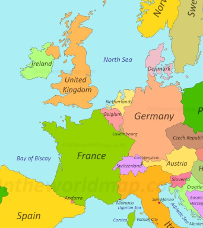

I was born in Canberra, ACT, and lived with my family in
Queensland for a few years before moving to
Wagga Wagga at 3 years old where I was raised for the
majority of my life. I attended the entirety of my
schooling including university study in wagga and
have barely left the state since.
A notable exception being my first international trip in 2017.
I left with a group to explore the UK, Netherlands and Germany.
It was one of the best experiences of my life and has instilled
a love of travel. Since then I have toured Tazmania in a
campervan over several weeks and I plan to travel overseas
to Asia in 2020. I one day hope to pursue a career in the
technology industry that allows me to travel the globe.

Some of my hobbies include:
- I read a lot of fantasy/nonfiction books
- I enjoy both building and gaming on high end PC systems
- I enjoy programming and other computer based processes
- I collect wooden frame pens
- I enjoy problem solving and puzzles
- Travel